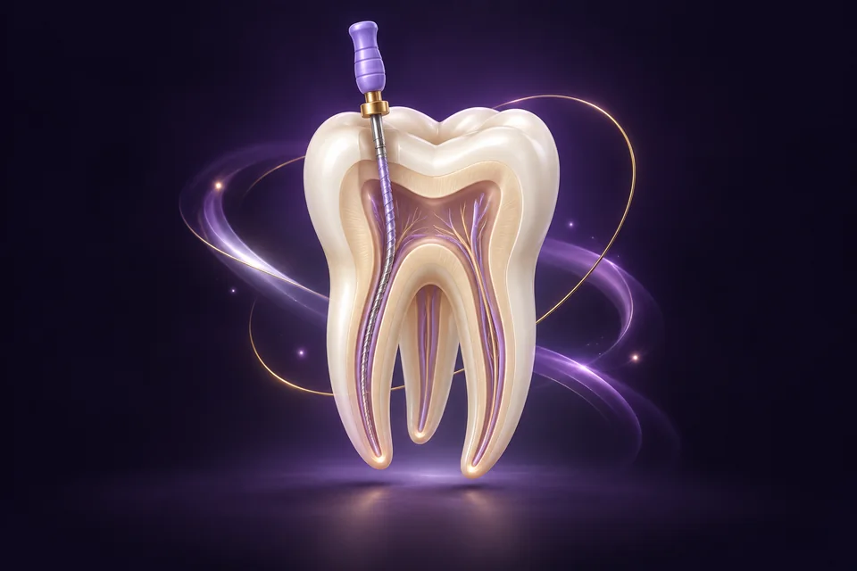

ปวดฟันรุนแรงจนกินไม่ได้นอนไม่หลับ ไม่ได้แปลว่าต้องถอนฟันทิ้งเสมอไป การรักษารากฟัน ช่วยเพิ่มโอกาสเก็บฟันจริงไว้ได้ในหลายกรณี

รักษารากฟันคืออะไร?
เมื่อฟันผุลึกจนถึงโพรงประสาทฟัน เชื้อโรคจะทำให้ประสาทฟันอักเสบและปวดรุนแรง การรักษารากฟันคือการกำจัดเนื้อเยื่อที่ติดเชื้อออก ทำความสะอาดคลองรากฟัน แล้วอุดปิด ทำให้เก็บตัวฟันไว้ใช้งานต่อได้ โดยไม่ต้องถอน
สัญญาณว่าอาจต้องรักษารากฟัน
- ปวดฟันรุนแรง ปวดตุบๆ โดยเฉพาะตอนกลางคืน
- เสียวฟันมากเวลาดื่มน้ำร้อน-เย็น และเสียวค้างนาน
- ฟันเปลี่ยนเป็นสีคล้ำหรือเทา
- เหงือกบวม มีตุ่มหนองใกล้ฟันที่ปวด
รักษารากฟัน vs ถอนฟัน — อะไรดีกว่า?
หากฟันซี่นั้นยังบูรณะได้ การเก็บฟันจริงไว้มักเป็นทางเลือกที่ดี เพราะถ้าถอนแล้วมักต้องใส่ฟันทดแทน (รากเทียม สะพานฟัน หรือฟันปลอม) ซึ่งมีค่าใช้จ่ายและข้อจำกัดของตัวเอง ทันตแพทย์ของเราจะประเมินตามจริงว่าฟันซี่นั้นเก็บได้หรือไม่ ไม่รักษาเกินจำเป็น
ขั้นตอนการรักษารากฟัน
- เอกซเรย์และประเมิน — ดูความลึกของการติดเชื้อ แจ้งแผนและราคาก่อนเริ่ม
- ทำความสะอาดคลองรากฟัน — ใช้ยาชา ช่วยลดความเจ็บระหว่างทำ จำนวนครั้งขึ้นกับความซับซ้อน
- อุดคลองรากฟัน — ปิดคลองรากเพื่อลดโอกาสติดเชื้อซ้ำ
- ครอบฟัน — ฟันหลังหรือฟันที่เนื้อฟันเหลือน้อย มักแนะนำให้ครอบฟันเพื่อลดความเสี่ยงฟันแตก